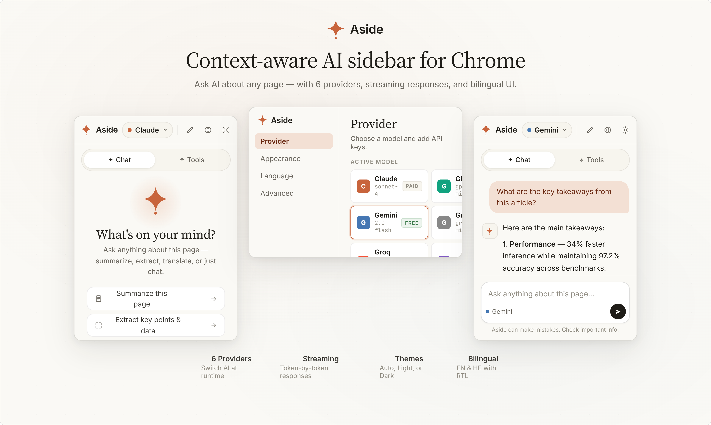
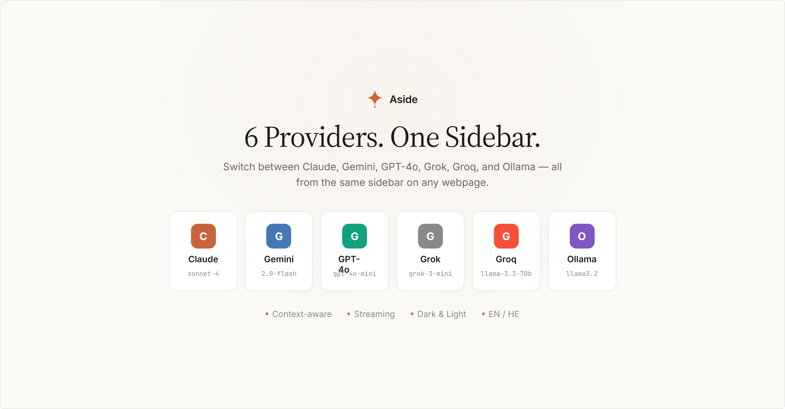
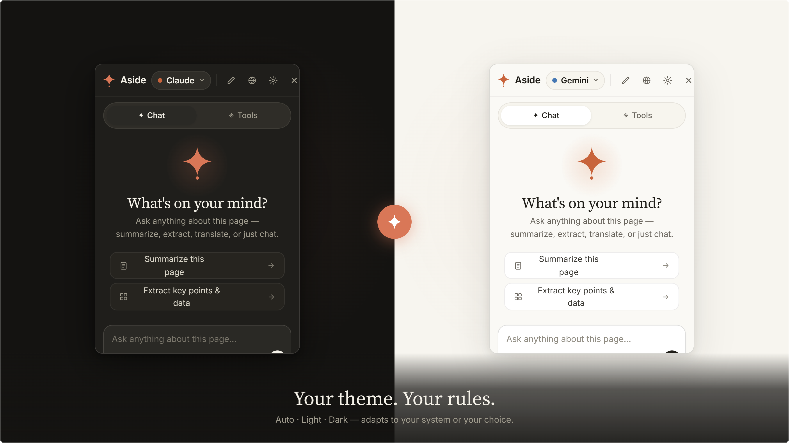

One keystroke
Alt+A on any page. The sidebar slides in, already aware of what you're looking at.
Ask any AI about the page you're reading — summarize, extract, translate, or just chat. Six providers, one keystroke, zero context-switching.
You're reading something — an article, a research paper, an API doc, a long email thread — and you want an AI's take now, without losing your place.
Alt+A on any page. The sidebar slides in, already aware of what you're looking at.
Claude, Gemini, GPT-4o, Grok, Groq, and local Ollama — switch in a click, no separate logins.
Summarize, extract key points, translate, find on page, or run a custom prompt. No copy-paste.
Tokens arrive as the model thinks — cancel any time, edit, and ask again.
Light, dark, or auto. English or Hebrew, with full RTL support.
Conversations are saved per-site so you can pick up where you left off.

Add a key once in Settings → Provider. Aside validates it live against the real API before saving. Switch any time from the sidebar header.

A slim sidebar slides in on the right (or left — your choice). It already knows the page's language and what text you have selected.
Summarize, Key points, Translate, Explain, Find on page. Or write your own prompt. Answers stream in token-by-token.
The header dropdown swaps between Claude, Gemini, GPT-4o, Grok, Groq, and Ollama with one click. Each remembers its own model.

API keys live in Chrome's encrypted local storage and are sent only to the provider you chose, over HTTPS.
No analytics, no telemetry, no proxy server. Requests go straight from your browser to the model provider.
Page content is included only when you ask. Trimmed to 12 000 characters and sent with that single request.
Pick Ollama and nothing leaves your computer — your prompt and the page text stay on your machine.
One-click install, automatic updates. We're preparing the store listing — check back shortly.
chrome://extensions and turn on Developer mode.ai-sidebar folder.No build step. No npm install. No accounts. Just unzip and load.
Open source, MIT-licensed, and free forever.